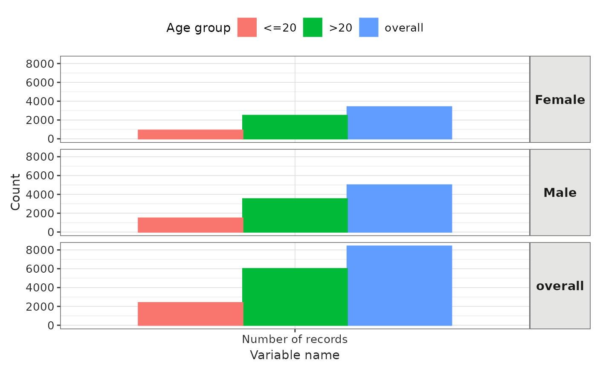

Create a ggplot of the records' count trend.
Arguments
- result
Output from summariseRecordCount().
- facet
Columns to face by. Formula format can be provided. See possible columns to face by with:
visOmopResults::tidyColumns().- colour
Columns to colour by. See possible columns to colour by with:
visOmopResults::tidyColumns().
Examples
# \donttest{
library(OmopSketch)
cdm <- mockOmopSketch()
summarisedResult <- summariseRecordCount(
cdm = cdm,
omopTableName = "condition_occurrence",
ageGroup = list("<=20" = c(0, 20), ">20" = c(21, Inf)),
sex = TRUE
)
#> Warning: `summariseRecordCount()` was deprecated in OmopSketch 1.0.0.
#> ℹ Please use `summariseTrend()` instead.
plotRecordCount(result = summarisedResult, colour = "age_group", facet = sex ~ .)
#> Warning: `plotRecordCount()` was deprecated in OmopSketch 1.0.0.
#> ℹ Please use `plotTrend()` instead.

CDMConnector::cdmDisconnect(cdm = cdm)
# }